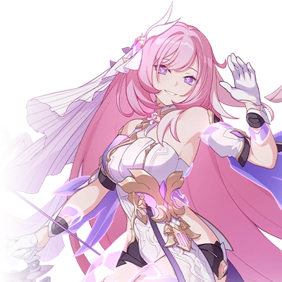
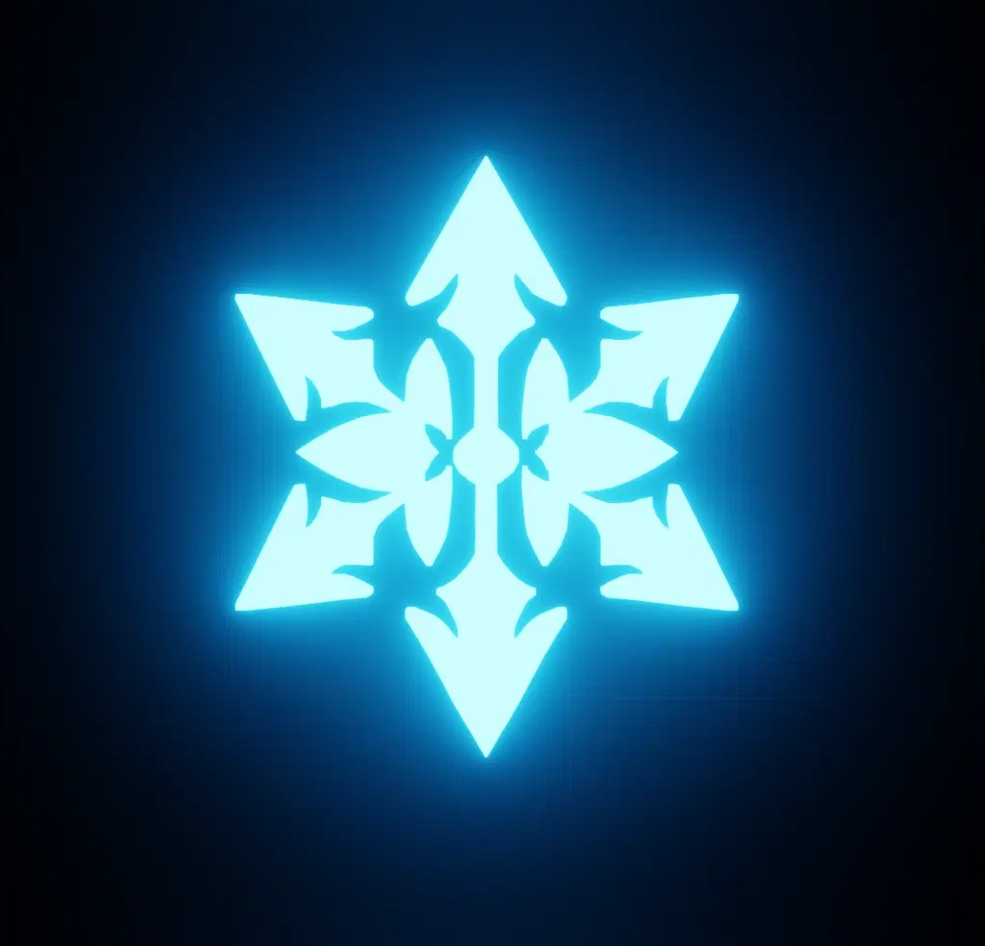

✦
Thông tin cơ bản / Elysia - Herrscher of Human: Ego

Thuộc tính
异能
Vũ Khí
 弓箭
弓箭
Sát thương

冰伤
Sinh nhật
11/11
Hình dạng「Chân Ngã · Luật Giả Nhân Chi」là bộ giáp Luật Giả cấp S hoàn toàn mới của Elysia. Nhân vật sử dụng cung tên và quyền trượng để tấn công kẻ địch.
Sau khi kích hoạt tất sát kỹ,「Chân Ngã · Luật Giả Nhân Chi」sẽ tạo ra「Tinh Hải Vãng Thế」, thay đổi bối cảnh chiến đấu và chuyển sang dùng quyền trượng để tấn công kẻ địch.
Sau khi kích hoạt tất sát kỹ,「Chân Ngã · Luật Giả Nhân Chi」sẽ tạo ra「Tinh Hải Vãng Thế」, thay đổi bối cảnh chiến đấu và chuyển sang dùng quyền trượng để tấn công kẻ địch.